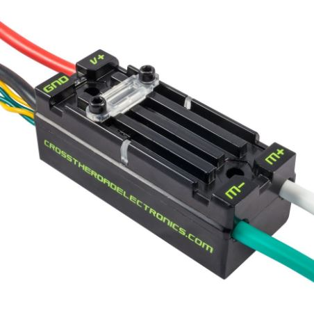

Overview
Motor controllers control motors by sending controlled levels of voltage to a motor.
In this section, you will learn to and create motor controller objects in Java.
You will then create the methods that control these components.
Creating a TalonSRX Object

Place this in the class constructor under public class <Subsystem_name> extends SubsystemBase
private final WPI_TalonSRX <motorcontrollername> = new WPI_TalonSRX(X);
The number X corresponds to the CANId of the motor controller. Each motor controller has a unique CANId to make sure the correct one is called.
Creating a VictorSP Object

Place this under public class <Subsystem_name> extends SubsystemBase
private final WPI_VictorSPX <motorcontrollername> = new WPI_VictorSPX(X);
The number X corresponds to the CANId of the motor controller.
Creating Motor Controller Methods
A method is a function of the subsystem.
Other parts of code can call the method, which will automatically run the block of code between the {}.
This allows for code to be reused throughout the program.
To create a method, place the following code before the final bracket.
Be sure to name the method starting with a lowercase letter, then camelCase.
public void <method_name>(){
}
If you would like to pass a parameter into the method, use the following syntax.
Multiple parameters can be passed if needed.
public void <method_name>(<datatype> <parameter_name>){
}
Methods should be placed at the bottom of the subsystem, but still contained within the class like so:

Motor Controller Functions
Each motor controler comes with a pre-built library of common functions. The most common are below:
| Methods | Description | Example |
|---|---|---|
| set | if control mode = PercentOutpuit, value of [-1,1] | LeftElevatorMotor(1.0); |
| setInverted | switches rotation of motor (by default, positive values are counterclockwise, negative values are clockwise) | LeftElevatorMotor.setInverted(true) Cell |
| stopMotor | stops motor | LeftElevatorMotor.stopmotor(); |
For a full description, see the following links
TalonSRX API
VictorSP API
Example
A function of an elevator may be to lift to a certain height, lower, or to stop.
The motors controlling the elevator will push the elevator in a certain direction.
To do the above, the following functions were created:

This sets the elevator motor that we created earlier at a certain value. For example, to stop the elevator, we could call setElevator(0.0) to stop the elevator motors.